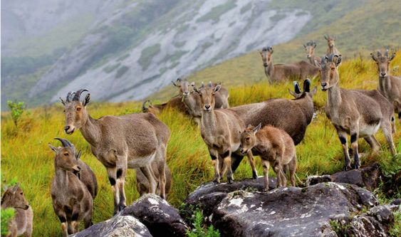

PLACES TO VISIT IN IDUKKI
ERAVIKULAM NATIONAL PARK

Spread over 97 sq km of land, the Eravikulam National Park holds the largest population of the endangered Nilgiri Tahr. It is also the abode of other animals such as small clawed otter, ruddy mongoose, Nilgiri Marten and dusky striped squirrel. The Neelakurinji flowers that cover the entire valley are a breathtaking sight. The Neelakurinji blooms only once in every twelve years. The last blossoms were in 2006; the next will be in 2018.
CHITHIRAPURAM
About 10 kms from Munnar, Chithirapuram is simply picture perfect, with its main attractions being the old playgrounds, Pallyvasal Hydel Project and lush tea plantations. The hill town slumbers in the midst of its picturesque surroundings. A tour to Chithirapuram unveils its natural bounty and immense agricultural potential. The Spices Board of Kerala has under its ambit two major nurseries, with one being at Chithirapuram.
IDUKKI WILDLIFE SANCTUARY

The Idukki Wildlife Sanctuary is spread over an area of 77 sq. kms. in the Thodupuzha and Udumpanchola taluks of the district. Situated at an altitude of 450 to 748 m above sea level, this sanctuary occupies the forest land between the Cheruthoni River and the Periyar River. There is a scenic lake around the sanctuary, covered by an enchanting canopy of tropical evergreen and deciduous trees, and offers boat rides.Elephants, bison, sambar deer, wild dogs, jungle cats, tiger, wild boar etc are seen here apart from various species of snakes including cobra, viper, kraits and numerous non-poisonous ones. Birds include jungle fowl, myna, laughing thrush, black bulbul, peafowl, woodpecker, kingfisher etc. The wildlife here is similar to that of Thekkady. This sanctuary lies adjacent to the world renowned Idukki Arch Dam.
TOP STATION
The highest point in Munnar, Top Station offers panoramic views of the countryside and the sprawling tea estates. The summit also offers clear views of the plains of Tamil Nadu and the edge of the Western Ghats.
DEVIKULAM LAKE
Devikulam is a small and beautiful hill station, 1800 metres above sea level. 7 kms from Munnar, this hill station with its unique flora and fauna and pleasant weather makes an ideal summer haven. Said to be the highest lake in Munnar, the Devikulam lake is perfect for trout fishing. A local folklore says that Goddess Sita took a dip in the waters of this lake. There is a temple close by which was built in her honour. The lake can be visited only after getting prior permission from the Tata Tea Regional Officer, Munnar. Not far away from the lake is the spectacular Pallivasal Waterfalls that is frequented by picnickers for the sheer manifestation of nature in its various ways.
MUNNAR
This idyllic hill station with sprawling green tea estates was the summer resort of the erstwhile British Administration in South India. Munnar, (Mun meaning three and aar meaning river) derives its names from the location it is situated at- at the convergence of three mountain streams- Muthirapuzha, Nallathanni and Kundala, set at an altitude of 1600 m above sea level. The places of interest in this hill station are: the Tea Museum, CSI Church, Mount Caramel Church, Mattupetty Dam, Blossom International Park, Kundala, Top Station, Echo Point, and Devikulam Lake among many others.
THOMMANKUTHU
Famed for its waterfalls, Thommankuthu is a seven step waterfall that drops from a height of 1500 m. at each step there is a cascade with a pool below it. The 12 km trek to the top of the falls is an exciting experience.
IDUKKI ARCH DAM
The Periyar River flows through a valley formed by two massive rocks called Kuravan and Kurathi. The Idukki Arch Dam is Asia’s first arch dam and it is so massive that it spans the whole gorge. On one side is the calm reservoir and on the other one can hear the roar of the waters as it plummets into the dense valley.
PERIYAR WILDLIFE SANCTUARY, THEKKADY
Thekkady is famous for its wild life sanctuary which is home to elephants, sambhar deers, tigers, Nilgiri Langurs, lion-tailed macaques and gaurs. The sanctuary spread across an area of 777 sq kms was declared a tiger reserve in 1978. Conducted Boating tours across the Periyar River can offer a glimpse of elephants and tigers that come down to the river banks to slake their thirst. The nearby plantation hills of Kumily are also a place to visit when you are in Thekkady.